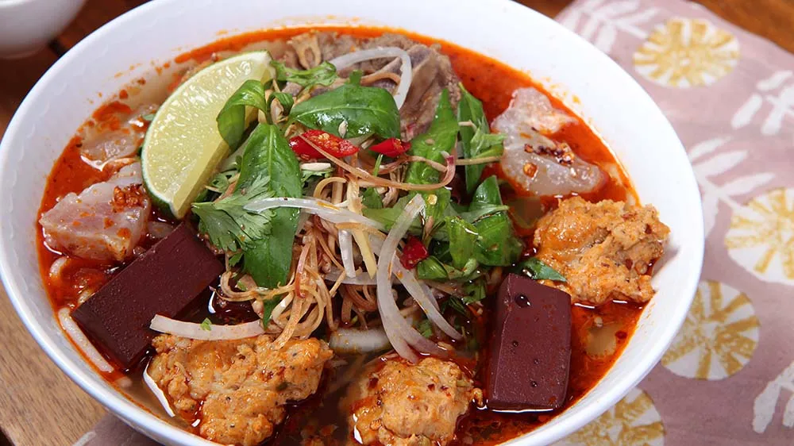

Pho

Description
Pho is a soup consisting of bone broth, rice noodles, thinly-sliced meat (in this recipe, it's beef), and fresh garnishes.
- Step 1:For the broth, place the pig’s trotters and oxtail in a large stockpot that’s at least 6-litre (6.3 qt) capacity. Pour over enough water to generously cover the beef. Bring to a boil and simmer for a minute or so. Then remove the bones from the water (there should be quite a bit of scum on the surface). Rinse the bones. Discard the water and clean the stock pot. Place the bones back into the clean stockpot along with the onion, lemongrass, ginger and salt. Add 5 litres (5.2 qt) of water. Bring to a simmer and cook gently for 2 hours, skimming the surface every so often.
- Step 2:Add the beef shin to the stockpot and top up with another 1–2 litres (1–2.1 qt) of water. Cook for 1½ hours. Transfer the shin to a plate. Set aside to cool slightly. Thinly slice.
- Step 3:Meanwhile, for the satay, heat the oil in a small frying pan over medium-high heat. Add the lemongrass, garlic and chilli powder to the oil. Simmer for 2 minutes or until aromatic. Stir through the annatto powder (see note). Set aside to cool slightly.
- Step 4:Remove all the bones from the broth. If you can salvage any meat from the bones, keep that for serving. Strain the broth and place it into a clean pot. Combine the shrimp paste with 2 tablespoons of water and stir to combine. Add to the pot along with the bun bo seasoning and fish sauce. Stir in the satay. Taste and season with more fish sauce or salt to your taste.
- Step 5:Follow the packet instructions for cooking your noodles. Drain and divide among serving bowls.
- Step 6:Add some sliced beef shin and meat from the trotters and oxtail to serving bowls. Pour over the broth. Top with Vietnamese mint, bean shoots, chilli, spring onion, coriander and fried shallots. Serve with lime wedges.